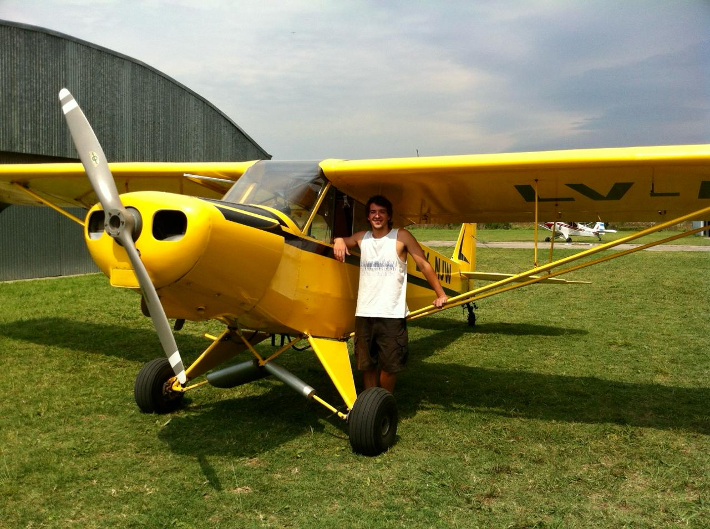
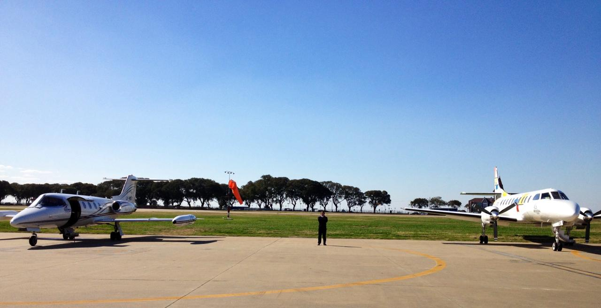
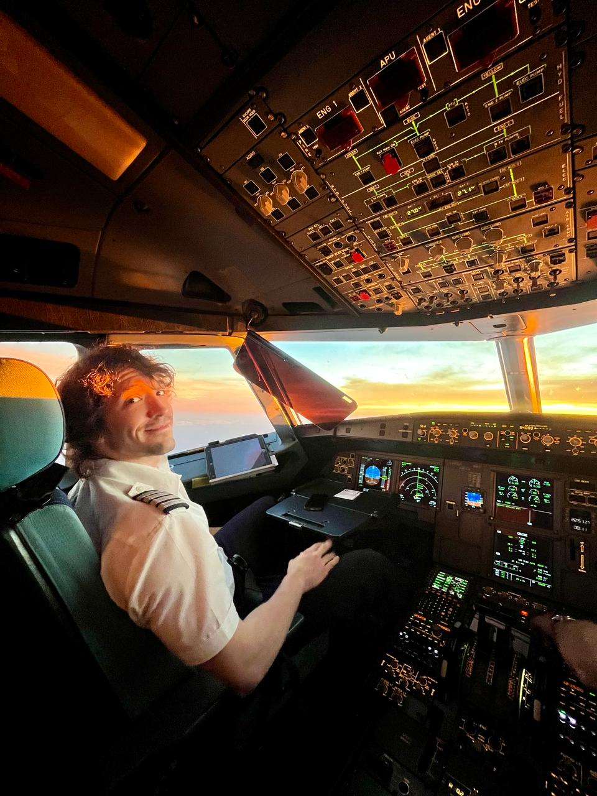

Mi Trayectoria Profesional
Desde que tengo memoria siempre me llamaron la atención los aviones, puede que sea algo genético, ya que tanto mi padre como mi abuelo materno, se dedicaban y compartían esta gran pasión.
Cuando cumplí los 16 años, ya contaba con todos los requisitos para poder comenzar el curso de Piloto de Planeador. El aeroclub elegido fue el de Zarate, donde tenía la posibilidad de volar distintos tipos de planeadores y una mayor frecuencia de vuelos para poder terminar cuanto antes el curso. Este mismo constaba de 40 remolques en los cuales se me fue instruyendo los principios básicos y fundamentales para el vuelo sin motor.
Habiendo termina el curso anteriormente mencionado y contando con 17 años, comencé en el Aeropuerto de San Fernando, para luego terminar en el Aeropuerto de Morón, el curso de Piloto Privado de Avión (Monomotor). Debo aclarar, algo que no está incluido en la información de los cursos, que como yo ya era piloto de Planeador, en vez de tener que realizar 40hs de vuelo para obtener esta nueva licencia, las mismas se reducían a 20hs.
Una vez finalizado el curso, yo estaba autorizado para ir sumando mis horas de vuelo con el objetivo de llegar a las horas especificas que necesitaba para la licencia de Multimotor y además, las 200hs obligatorias para la licencia de Piloto Comercial de Avión, la cual me habilitaría a trabajar como Piloto y dejar de pagar horas de vuelo en los Aeroclubs.
En Diciembre del 2011, llega el día en el que finalmente rindo mi habilitación como Piloto Comercial de Avión, en Río Grande, Tierra del Fuego. Teniendo la buena suerte que uno de los dueños de una empresa privada de vuelos sanitarios, que estaba basada ahí, participo como veedor y quedo interesado en mis capacidades y conocimientos para la poca experiencia que tenía en la aviación, ofreciéndome mi primer trabajo de piloto. El mismo consistía en operar 2 aviones, uno era un turbohélice y el otro un jet, buscando al paciente que necesitaba ser trasladado a un centro médico de mayor complejidad en Buenos Aires desde la provincia donde se encontrara.
Pasaron 4 años y medio, llenos de grandes anécdotas, experiencias de vuelo y habiendo recorrido casi toda la Argentina, que el bichito de la Línea Aérea comenzó a surgir en mí. Por lo que me preparé y presente para rendir la licencia de Piloto Comercial de 1ra Clase, la cual me iba a habilitar para poder volar en cualquier Línea Aérea del país.
A los meses de contar con todas las condiciones, requisitos y licencia, sale en el diario un llamado de Pilotos para hacer los exámenes y ser contratado como Piloto en Austral Líneas Aéreas. Dicho llamado constaba de 3 instancias: Examen Teórico, Examen Práctico en un Simulador de Vuelo y una Entrevista Personal. Debo admitir que esas semanas fueron muy intensas, pero pasé cada instancia de forma satisfactoria y el 3 de Agosto del 2016 me convertí en Piloto de Línea Aérea.
